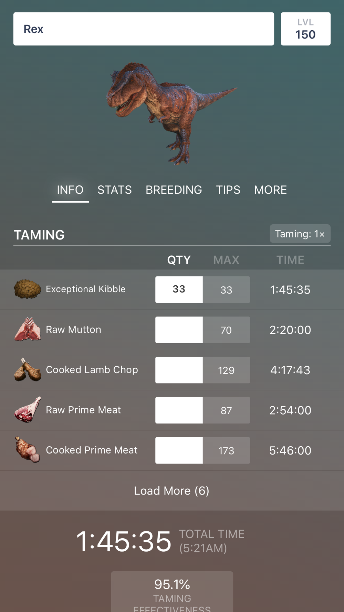

dododex 十年盘点：这款 ARK 计算器到底藏了多少能力域
从 2016 年首发到 2026 年的 2.8 版本，dododex 早已不是一张驯服表。本文按能力域系统梳理它的完整版图，顺带说清那些文档里没明讲的使用场景和局限。
如果你玩 ARK，大概率见过dododex官网——可能是在驯龙前对着它算发数，也可能是在繁育季靠它记计时器。但你有没有想过：这款 2016 年就上架的应用，十年间已经长到了什么程度？
很多玩家对它的认知还停留在「驯服计算器」这四个字上，可当你把它的功能面完整铺开，会发现它其实是一整套 ARK 实战决策体系：从打晕的第一发麻醉镖开始，到饲料配比、饥饿计时、成长阶段、资源反推，甚至管理员命令和克隆舱成本——每一个环节它都有对应的模块，而且每个模块背后都埋着游戏底层的真实数值。
这篇就来做一次系统性的能力域盘点，顺便聊聊它的短板到底在哪。
能力域一：驯服计算——从「查表」到「预算方案」
驯服表是 dododex 被看得最多的界面，但它的三列联动设计，决定了它远不止一张静态对照表。
QTY（数量）、MAX（上限）、TIME（耗时）这三列构成了一个动态决策器。你手头有 30 份顶级饲料还是 80 份生羊肉？把 QTY 手动调到你实际有的份数，总耗时和驯服效率百分比会实时重算。这在实战中特别有用——比如你只剩 25 份饲料，驯 150 级雷克斯，调完之后发现效率从 95% 掉到 87%，那你就要算：是继续补饲料到 33 份保效率，还是省点资源接受少升几级？
这个调数开关的存在，把「选食物」从填空题变成了选择题。很多新人第一次用会把 MAX 当成必须喂的量硬凑，其实 MAX 是上限——低于上限照样驯成，只是效率会按比例下降。
底部两个大数字也有讲究：TOTAL TIME 旁边那个现实时刻预测（比如凌晨 5:21AM 驯完），是真的能帮你排班的。要不要挂到半夜、要不要中途起来补麻醉剂，看一眼就有数。

能力域二：击晕与麻醉——节奏才是核心
很多人驯服失败不是因为粮不够，而是击晕阶段节奏崩了。
dododex 在击晕区直接标注了每个生物的眩晕衰减速率，并给出「高 / 低」标签。这个速率值才是决定麻醉镖间隔的真正因素——同样 5 秒一发，打三角龙（衰减约 1/秒）和打南方巨兽龙（1 级就 120/秒）完全是两个难度。南巨的情况最极端：第一发之后隔 7 秒打第二发，那 1 秒的空档几乎把第一发的眩晕全吞了。
2.7 版本后新增的「理想射击节奏」参考，是把武器详情、头击倍率、部落塔加成这些变量一起算进去的。你用的是长管步枪还是复合弓？打在头部还是身体？这些参数全在后台参与计算，最终给你一个秒数范围。
击晕完成后，眩晕衰减不会停，战场从枪换成了麻醉剂。dododex 的眩晕计时器会帮你算出「下一次补麻醉剂的临界时刻」——衰减快的生物（比如飞龙系 25/秒）昏迷期也要高频补，不能凭感觉整组硬塞。
能力域三：繁育与成长——时间线精确到分钟
繁育计算器是 dododex 在 1.13 版本就上线的老模块，但它的完整度在 2.8 版本才真正体现出来。
它能算出幼龙从孵化到每个成长阶段的精确到达时间，而且考虑了模组变体。2.5 版本加了 Primitive Plus 模组支持，2.6 版本之后搜索可以按生物分类筛选，繁育党管理多枚蛋的时候不用一个个翻。
成长阶段的时间点在实战中很关键——比如你要在幼龙进入下一阶段前准备好对应食物，或者要安排部落成员接力守着。dododex 给的不是大概值，是精确到分钟的倒计时，而且离线也能查（2.4 版本加了离线模式）。
能力域四：资源与配方——反推你的采集清单
这是 2.6 版本才正式上线的模块，但对部落管理者来说可能是最实用的一块。
资源计算器可以按配方反推材料需求——你要做 100 发麻醉镖，它会告诉你需要多少黑色浆果、多少麻醉药、多少石头。物品重量的标注（2.5.2 版本加的）让你在规划采集路线时就能算好负重，不会跑一半发现背包满了。
2.5.2 版本加的自定义配方计算器是个隐藏功能——很多模组会引入新配方，或者你想按自己部落的特定菜谱来算，都可以手动录入后让 dododex 帮你算批量需求。
能力域五：版本适配与数据维护——跟得上游戏才是好工具
这一点是 dododex 和其他计算器拉开差距的地方。
ARK 从 ASE（生存进化）转到 ASA（生存飞升），基础驯服速度翻倍、头击倍率变了、很多生物的参数重新校准——dododex 在 2.5 版本就加了 ASA/ASE 版本开关，2.7 版本又把头击倍率做成了切换项。2.8 版本进一步给每个生物档案标注了 ASA/ASE/UME（手游版）的可用性，你查一个物种时一眼就知道它在你玩的版本里有没有。
数据本身的维护体系也值得说：它以游戏底层参数为基准而非玩家目测，每周多次更新，还有 40 万玩家提交的驯服经验做众包校验。你发现一个数值不对可以一键上报，开发者修得很快。更详细的倍率校准表和各版本历史参数，在它的dododex文档里都能查到。
能力域六：内置管理员命令——作弊玩家的偷懒神器
2.8 版本加的这个功能算是「隐藏彩蛋」：内置了生物和物品的管理员命令，而且已经按 ASA/ASE/UME 版本做了分类。单机玩家或者开服管理员可以直接复制粘贴指令，不用再到维基里翻。
短板也要说
盘点不能只说好的，几个客观局限得摆在这：
免费版有广告——虽然形态很克制（底部一条横幅，不弹窗），但确实存在。Pro 版 4.99 美元买断，买的是去广告加暗色主题，没有其他功能锁定。
跨平台购买不互通——iOS 的 Pro 买了不能转移到 Android，反之亦然。这是苹果和谷歌的内购体系限制，开发者绕不过去。
没有 PC 客户端——dododex 本质是移动端应用，从官方下载拿到的也是手机端安装包，虽然有网页版但功能不如 App 完整。PC 玩家如果习惯键鼠操作，可能会觉得在手机上切来切去有点麻烦。
模组覆盖不全——虽然支持 Primitive Plus，但很多热门模组（比如 Primal Fear、Extinction Core）的数据还是靠社区众包，更新节奏不如官方内容快。
什么样的人该用它
三个典型画像：
深度 ARK 玩家——如果你每天开服、每周刷 Boss、每月繁育一波龙，dododex 是必需品。驯服效率差 8% 就意味着主力龙少升好几级，眩晕衰减算错就意味着麻醉药白攒，这些代价都不是「凭感觉」能承受的。
部落组织者——资源反推、繁育计时、多人协作的时间安排，这些模块在部落层面的价值远高于个人。你可以用它做每周的采集清单，或者安排谁在什么时间点起来补蛋。
新手过渡期——刚入坑 ARK 的时候，dododex 是最好的教科书。它的「饿驯法」说明、击晕节奏参考、常见误读提醒，比维基百科更实战，比 YouTube 视频更浓缩。而且免费版功能全开，一分钱不花就能把核心能力用透。
最后说一句
dododex 的更新节奏本身就是一个信号——十年不断更、跟着游戏版本同步调整、数据以底层参数为基准——这些看起来理所当然的事，在游戏工具类应用里其实非常少见。很多同类型工具要么停在某个版本不再维护，要么数据来源不可靠让你算出来的结果在实战中对不上。
它不一定是你用的唯一 ARK 工具，但一定是你应该装在手机上随时能打开的那一个。关于这款应用的详细资料和历史版本归档，在GitHub、Gitee和GitCode三个仓库都能找到，方便不同平台的玩家查阅。